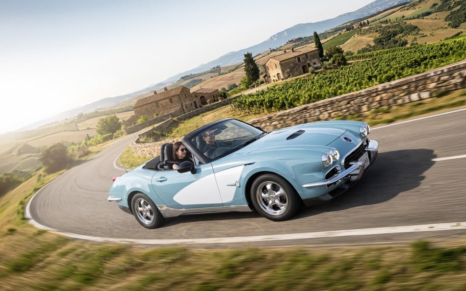
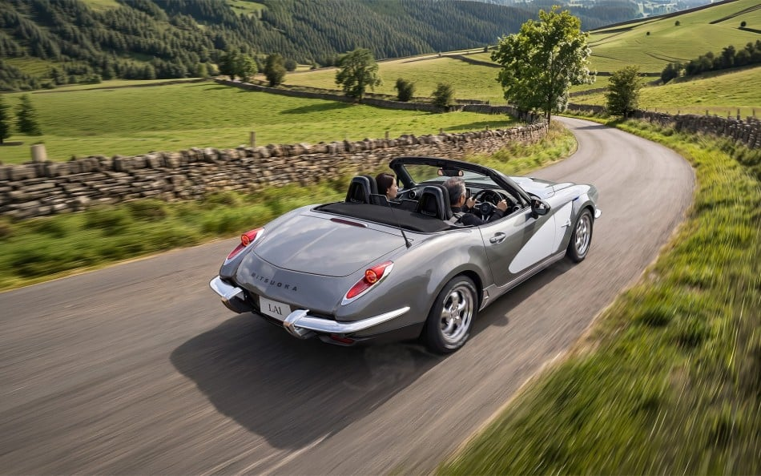
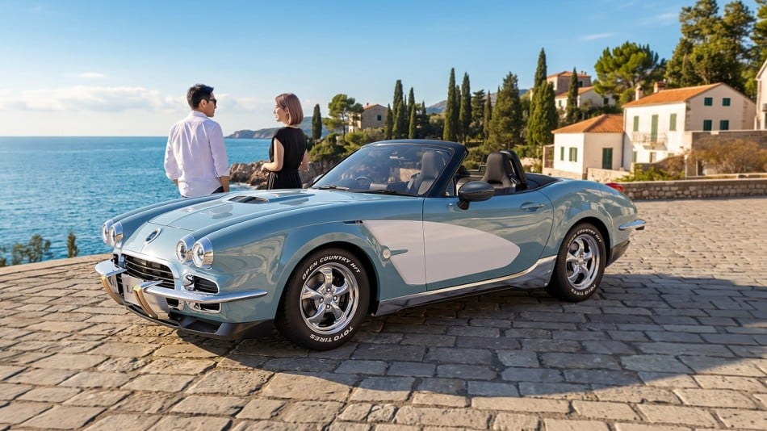
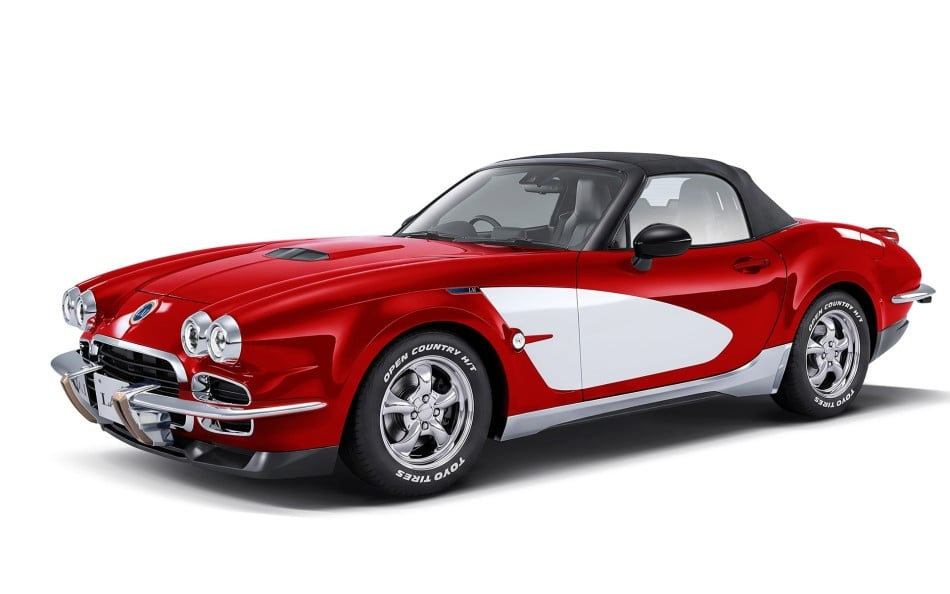
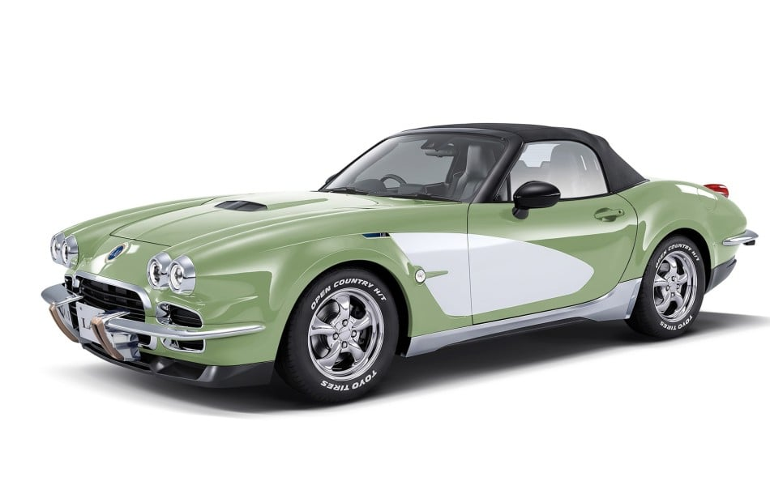
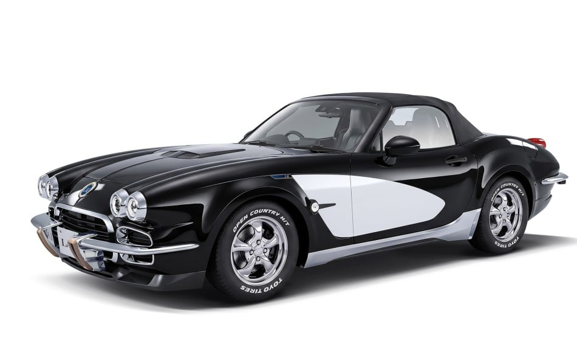
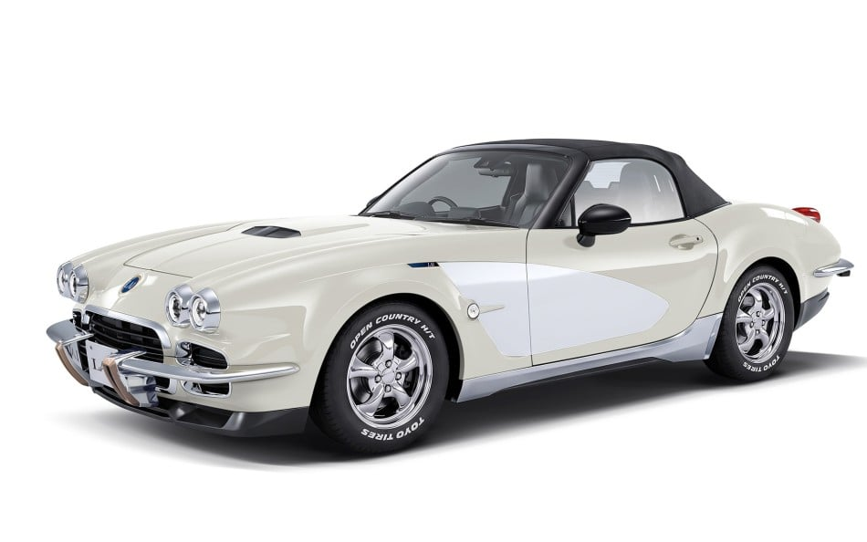
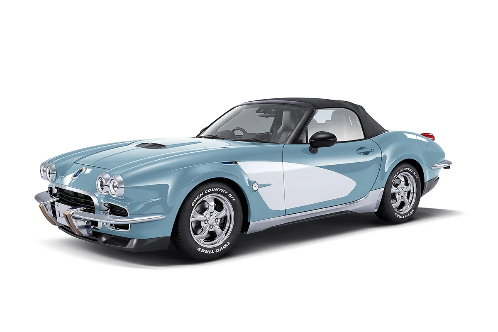
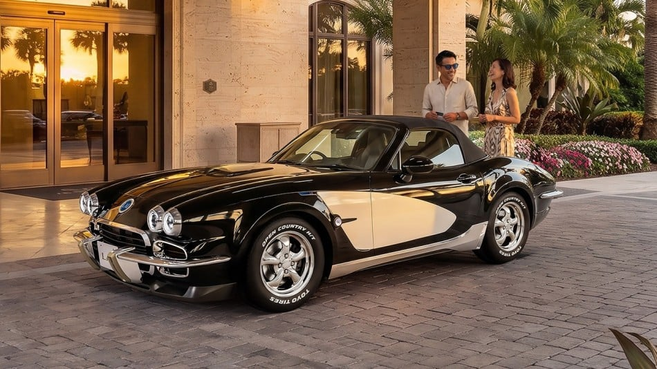
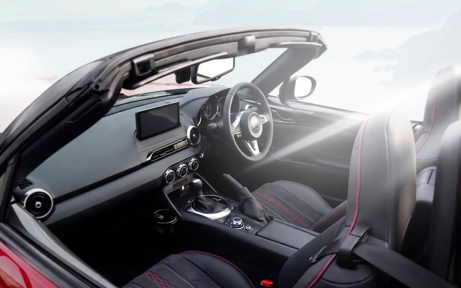

일본 수제 커스텀카,미쓰오카의 LA1.베이스는 마쯔다 로드스터.










일본 수제 커스텀카,미쓰오카의 LA1.베이스는 마쯔다 로드스터.
이쁘다
녹색 번호판 커스텀 하면 얼마나 좋을까.. 베이지색으로 타고다니고 싶네
이게 차지
charge
요거 기반 자동차가 미아타 mx5 , 아쉽게도 미아타도 미쓰오카도 나까마 끼고 사야해서 한국은 너무 그돈씨라 아쉽
이것저것 제반비용 따지면 한국 들어올때 8천이상 하겠는데 ㅋㅋㅋ
요즘 미아타 직수가 그정도임
헐 시발 엔화 이정도인데도 그럼? 미쳤네 그럼 저거는 1억언저리 아냐
미아타 직수는 일본에서 때오는게 아니라 멕시코인가? 거기서 때와서 그래
아 좌핸이라 거기서 갖고오는구나...달러 환율 때매도 더 그렇겠네 저차는 아마 우핸만 나올거같넹... 우리나라도 코치 빌더나 등화류 개조좀 열어줬으면 좋겠어
미친 낭만
개쩐다 진짜
와 ㅋㅋ 개쩔긴하네 디자인
휠 타이야 차체 조화가 너무 예쁘다 비싸겠지
649만엔 스타트
한국도 뭔 스포츠카있지않았나 이런식으로 수제제작
스피라? 어울림 모터스
있는차 가져와서 뜯어고치는 모헤닉이 있었고(본문과 비슷한 사례인데 모헤닉은 중고차를 가져옴)
아예 바닥부터 만든 어울림이 있었는데
둘다 망함. 둘다 지저분하게 망함
저 범퍼때문에 국내에선 탈 수 없겠지?
다리절단 범퍼ㅋㅋㅋ
ㅋㅋ 미니콜벳이네
로드스터 베이스라 차체 비율도 납득됨
오로치 이쁨
진짜 𝙅𝙊𝙉𝙉𝘼 이쁘네
미국도 일본도 차가 다양하고 커스텀이 자유로워서 좋더라
마쯔다 선생임들 제발 한국에서 차팔아주세요 미아타 8천주고는 못사겠습니다
어차피 정식으로 들어와도 7000일걸 ㅋㅋㅋ
일본 신차가격 뻔히아는데 너무하는구만 십련들 따흑 ㅠㅜ
86이 5천인데 그근처겠지뭐
옛날 미국차같네
히미코랑 오로치가 멋있다라 미쓰오카는
핫휠임?
전나 이쁘네
이회사 안망하고 계속 나오네????
이게 차지 ㄹㅇ
여태까지 나온 미쓰오카 중 가장낫네 ㅋㅋㅋ
병신차 진짜
사실상 자동차 회사라기보단 커스텀 회사임ㅋㅋㅋ
예전에 뭐에 홀려서 가류 중고로 샀었음 ㅋㅋ
아ㅋㅋ 가류도 모르는사람이 보면 롤스로이스여ㅋㅋㅋ
쒸이뿔련 쌈뽕하냐 ㅋㅋㅋㅋㅋㅋㅋ
오로치, 히미코 이쁘더라
못생긴 자동차 랭킹에 항상 드는 오로치지만 나도 갠취로는 간지난다고 생각함ㅋㅋㅋㅋ 생긴거랑 성능이랑 안 어울려서 문제지..
차 오지게 이쁘다 ㅋㅋㅋㅋ 범퍼는 아무리봐도 국내규정 걸릴거같은데 범퍼만 좀 손보고 국내 정발했음 좋겠다
범퍼만 좀....
배트카도 저건 안달겟다
저 디자인에 5인승으로좀해줭..
클래식카 느낌도 있고 이쁘다